Clawpack Application Gallery¶
Contents
2-dimensional advection¶
Advecting square with periodic boundary conditions.
amrclaw/examples/advection_2d_square ... README ... Plots
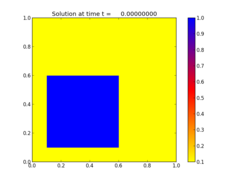 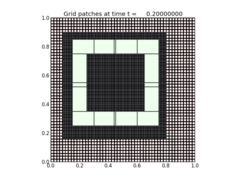
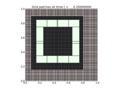
2-dimensional variable-coefficient advection¶
Advection with a swirling flow field.
amrclaw/examples/advection_2d_swirl ... README ... Plots
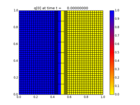 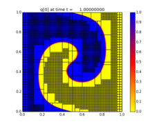 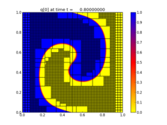Advection in an annular region.
amrclaw/examples/advection_2d_annulus ... README ... Plots
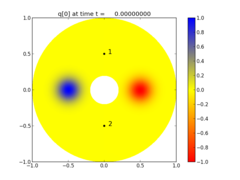 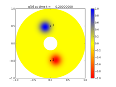 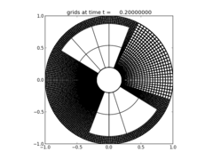2-dimensional acoustics¶
Expanding radial acoustic wave in a homogeneous medium.
amrclaw/examples/acoustics_2d_radial ... README ... Plots
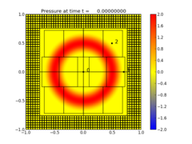 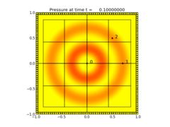 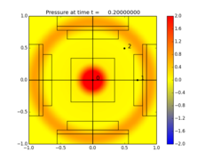